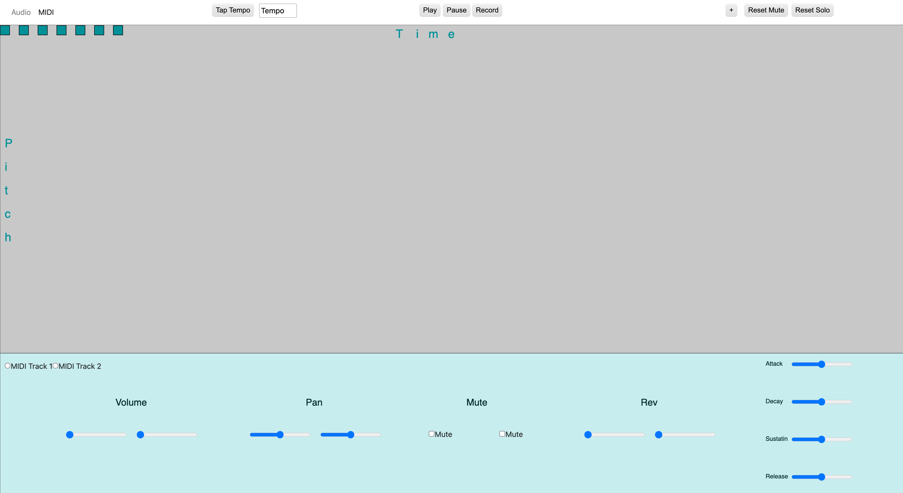
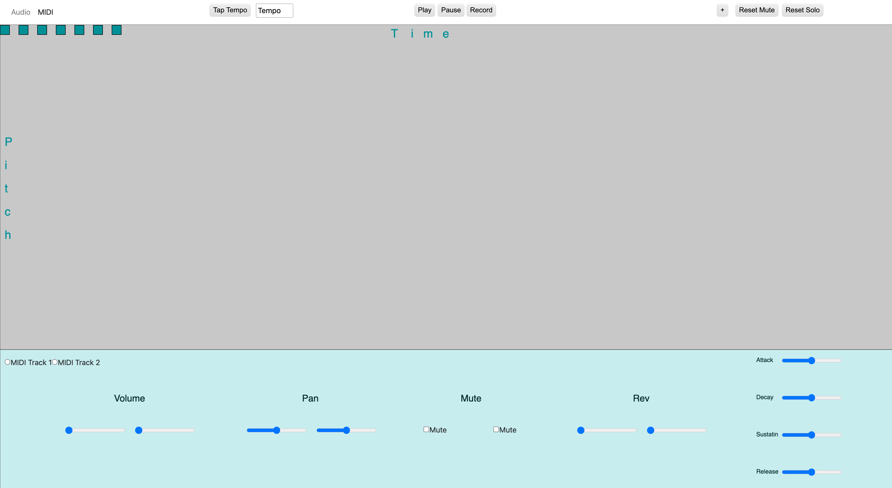

Embedded DSP Audio Effects (STM32 + FreeRTOS)
Real-time audio effects processor developed on an STM32 microcontroller using C/C++, featuring tremolo, delay, chorus, wah, reverb, and filtering. Object-oriented programming used to structure the effects, while FreeRTOS tasks and queus managed button and touchscreen interactions. The system implemented circular buffers, real-time control, and efficient audio processing for embedded environments.
4 Voice Synthesiser Plugin (JUCE + C++)
A polyphonic software synthesiser built using JUCE and C++, featuring four independently controlled voices with ADSR envelopes, panning, and waveform selection. The plugin includes built-in effects such as delay, reverb, phaser, filter, and tremolo, plus a visualiser and preset system.
MAX MSP - Additive Polyphonic Synth Patch

After Effects Projects:
Simple Web Audio Program (DAW w/ audio playback and MIDI functions):
 
